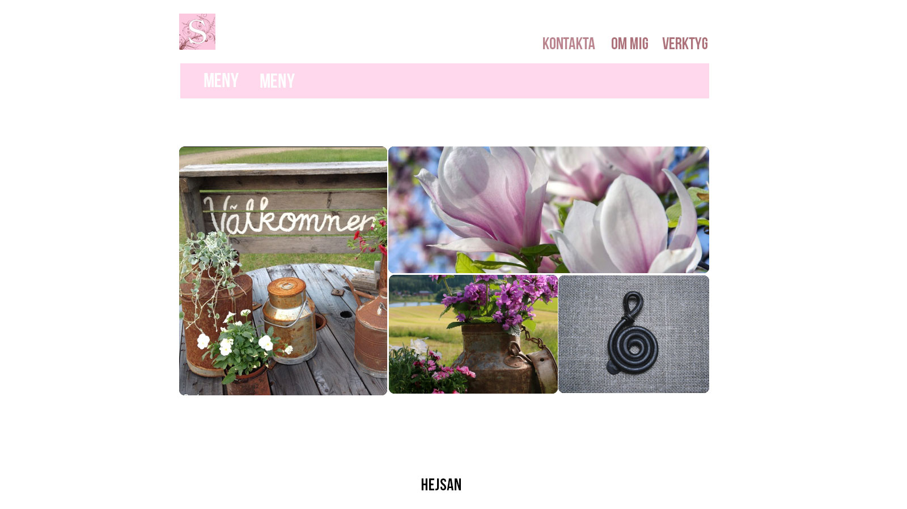
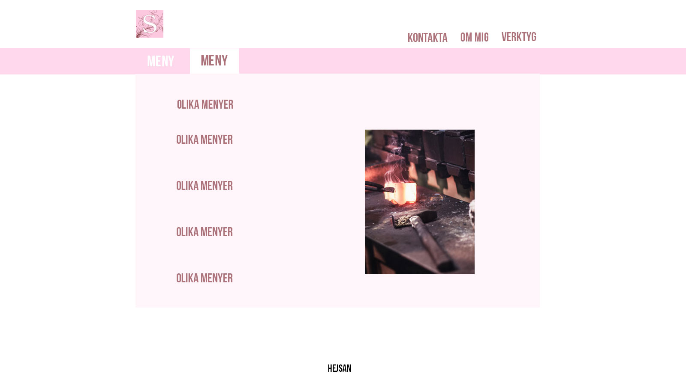
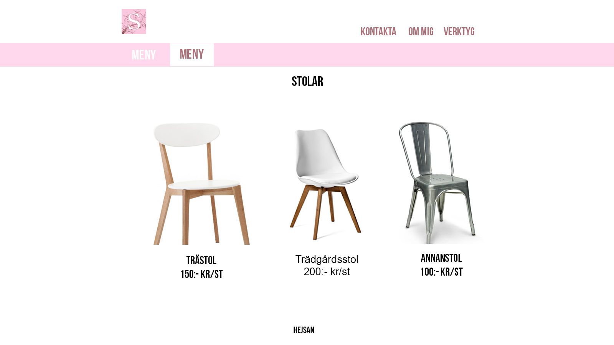

- Vecka 11: Bli klar med PS.
- Vecka 12: Börja och försöka bli klar med index.
- Vecka 13: Påbörja första sidan.
- Vecka 14: Bli klar med första sidan.
- Vecka 15: Lov.
- Vecka 16: Börja med undersidorna och bli klar med minst en.
- Vecka 17: Fortsätta med de andra undersidorna.
- Vecka 18: Fortsättning med undersidorna.
- Vecka 19: Validera och fixa problemen som uppstår och finslipa.
- Vecka 20: Göra klart det sista och validera samt finslipa det som behövs.


